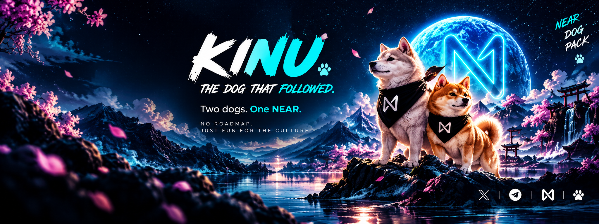

NINU found the path. KINU followed the scent. Two dogs. One NEAR. No roadmap. No promises. Just a meme, a pack, and fun for the culture.
No complicated math on the page. Just the supply and the allocation exactly as stated.
Creator allocation.
Buyback & burn allocation.
Community and holders.
Network: NEAR · Name: KINU · Symbol: $KINU
A simple story for a simple meme: NINU discovered the path, and KINU followed the scent.
They said there was only one dog.
NINU found the path and started walking through the NEAR ecosystem.
Then KINU appeared.
He didn't come to replace NINU. He came because he had followed the scent.
One dog found the way. The other followed.
And from that moment, the pack began to form.

KINU isn't here to sell a future. KINU is here to enjoy the present.
No fake milestones. No corporate promises. No “quarter four vision.” We are here to make memes, have fun, and let the community write the story.
NINU × KINU. NEAR × dogs. Community × memes. That's the meta. Everything else is just noise.
Bring the memes. Bring the energy. Bring your friends.